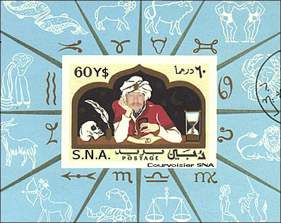

Dedicated to the brave and inventive Scheherazade The SNA Postal Museum could recently acquire one of the most precious jewels of the world philately, known under the name of "The Inverted Princy". The 1001 Nights set was issued by the SNA P.A. in the AD 2000 and is composed of exactly 1001 different stamps. "The Inverted Princy" stamp, shown below on the right, is inspired by the tale "The Black Horse". This is the only major error known at time of a such a big issue. What makes this stamp so special is not only its oneness, but also the fact that it is was postally used. The set was printed by the official printing office Helio Courvoisier SNA, the print run being of only 475'000 pieces. Scott No. 1001a, Michel No. 1101b, SNA Stamp Dealers Catalogue No. 1011c.
The acquisition price wasn't revealed; some usually well informed sources allege that the price should approach that paid at time for the renown Bordeaux letter. The seller's identity is also unknown, but the rumors affirm that the seller is somehow connected with the SNA Revolutionary Committee. About 50% of the acquisition price will be used for the further development of the SNA philately worldwide. The rest will serve for the protection of the stamp, the task of 11 Swiss Guards located in the museum area and of 1001 members of the SNA Security Forces, found permanently outside the building and covering the entire Ciedade de Leon. Even if the price to pay for openly exposing such a special stamp is quite high, it will allow for a free access of the public to this discovery, and this starting with the 11th of May, 2001.  In order to offer an as much complete information as possible, please admire above the souvenir sheet of the 1001 Nights SNA issue. Any resemblance of the wizard with real persons, like Mr. Blair Stannard, the SNA Postmaster General, is purely by chance. The sheet represents a joint issue with the former Arabian Sheikdom Dubai, now part of the United Arab Emirates. Stamp collectors of the whole world are invited to visit the SNA Postal Museum in Ciedade de Leon! Open Monday to Sunday, between 11:30 - 17:00. Closed on Saturday. Entry price: 1$ SNA. Free entry for the members of the American Topical Association, for the PASIC and the PWO members, and for children under age 14, accompanied by a Swiss Guard Philatelic Officer. A philatelic booth, offering the newest SNA issues, is at your disposal during the opening time of the museum. About the "1001 Nights" or the "Arabian Nights". The stories in the Arabian Nights are told by a legendary queen named Scheherazade in a broader frame story, which starts at the beginning of the collection and gives a context to the various stories it contains. The frame story begins when the sultan Schahriar finds that his wife has been unfaithful and orders her execution. He is so enraged that he resolves to marry a new woman every night and have her killed at daybreak. Scheherazade agrees to marry Schahriar despite the decree and crafts a scheme to thwart him. The night after the wedding, she tells one of the stories to her sister so that the sultan can overhear. She stops, however, before the story comes to its conclusion, and the sultan allows her to live another day so that he can hear the end. She continues this pattern night after night. After 1001 nights, the sultan relents and decides to let Scheherazade live. (After MS Encarta 1996).
|
|
Created
05/05/01. Revised: 01/07/06. |
|